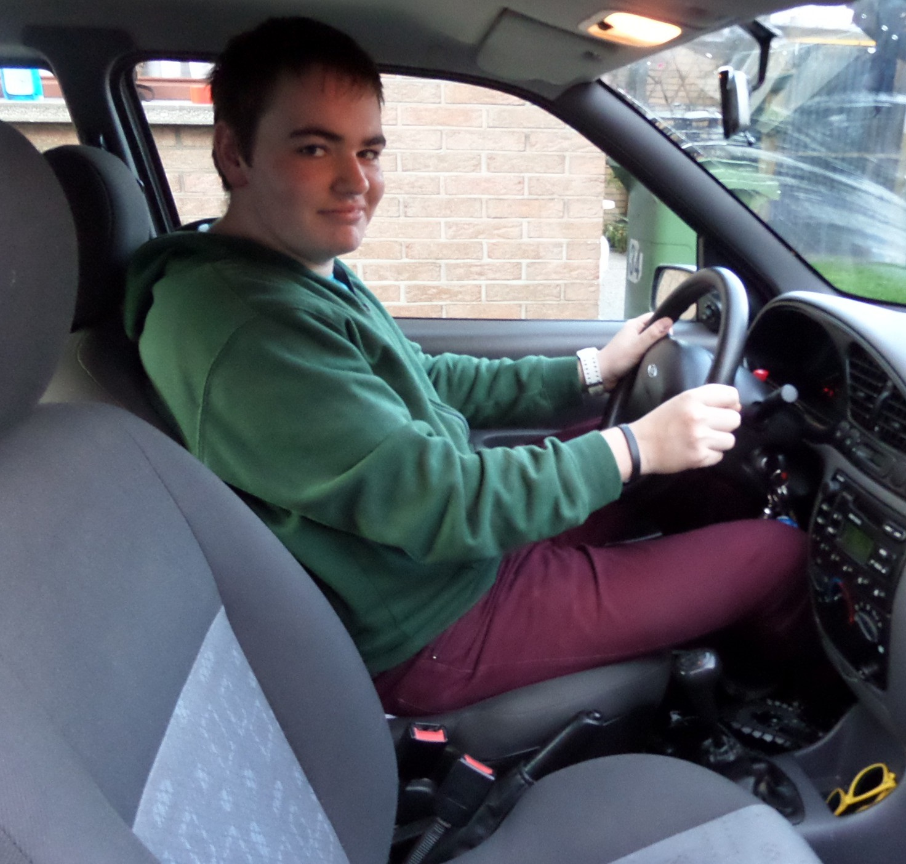

My name is Jorden Gysbrechts.I'm going to high school (Hogeschool Gent). At the left you can see a picture of me. I am 18 years old and from Sint-Gillis-bij-Dendermonde. I learn from a lot of tutorials, but the most from school. I also started to make tutorials to help people.
Why did I choose for ICT?
When I was a little boy I already was interested by the magic world of the computers. A couple of years later I started to repair broken computers and reinstall the operating system. I also make new computers.